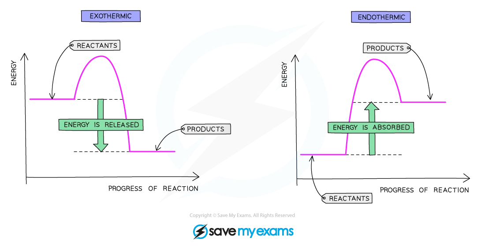

C5.1 Exothermic and endothermic reactions

1 State that an exothermic reaction transfers thermal energy to the surroundings leading to an increase in the temperature of the surroundings.
In an exothermic reaction, chemical energy stored in bonds is released as thermal (heat) energy to the surroundings.
The surroundings (solution, thermometer, air) get hotter – their temperature increases.
Examples: combustion of fuels, many neutralisation reactions, respiration.
2 State that an endothermic reaction takes in thermal energy from the surroundings leading to a decrease in the temperature of the surroundings.
In an endothermic reaction, the reacting chemicals absorb thermal energy from the surroundings.
The surroundings get cooler – their temperature decreases.
Examples: thermal decomposition of calcium carbonate, some dissolving processes (e.g. dissolving ammonium nitrate in water).
3 Interpret reaction pathway diagrams showing exothermic and endothermic reactions.
A reaction pathway (energy profile) diagram plots energy on the vertical axis and reaction progress on the horizontal axis.
– For an exothermic reaction: the energy level of the products is lower than that of the reactants. The overall arrow (ΔH) points downwards.
– For an endothermic reaction: the energy level of the products is higher than that of the reactants. The overall arrow (ΔH) points upwards.
Both diagrams show a “hump” (the activated complex) which corresponds to the activation energy.
4 State that the transfer of thermal energy during a reaction is called the enthalpy change, ΔH, of the reaction. ΔH is negative for exothermic reactions and positive for endothermic reactions.
The enthalpy change (ΔH) is the amount of heat energy transferred during a reaction at constant pressure.
– Exothermic: system loses heat to surroundings → ΔH is negative (ΔH < 0).
– Endothermic: system gains heat from surroundings → ΔH is positive (ΔH > 0).
5 Define activation energy, Ea, as the minimum energy that colliding particles must have to react.
The activation energy (Ea) is the minimum energy that reacting particles must have on collision in order for a reaction to occur.
Collisions with energy below Ea do not lead to reaction; only collisions with energy equal to or greater than Ea are successful.
6 Draw and label reaction pathway diagrams for exothermic and endothermic reactions using information provided, to include: (a) reactants (b) products (c) overall energy change of the reaction, ΔH (d) activation energy, Ea.
A correct diagram for either type should show:
– Horizontal line for reactants energy.
– Curve rising to a peak (activated complex), then falling to products energy level.
– Arrow from reactants line up to the peak = Ea (activation energy).
– Arrow between reactants and products levels = ΔH (downwards for exothermic, upwards for endothermic).
– Products line below reactants for exothermic; above for endothermic.
7 State that bond breaking is an endothermic process and bond making is an exothermic process.
– Breaking chemical bonds requires energy → endothermic process.
– Forming new chemical bonds releases energy → exothermic process.
Overall ΔH depends on these two: if more energy is released by bond making than is absorbed in bond breaking, the reaction is exothermic; if more is absorbed breaking bonds than released making new ones, the reaction is endothermic.